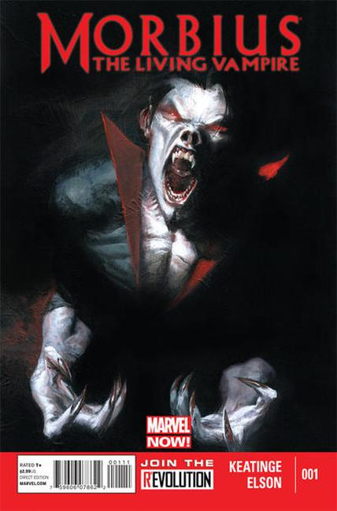

Issue #1: Illustrations by Ron Wagner, written by Len Kaminski.
Ghost Rider & Johnny Blaze guest star in Rise of the Midnight Sons part 3 of 6.

Series: 9 issues 2013, Marvel
Cover by Gabriele Dell'Otto, written by Joe Keatinge, illustrated by Richard Elson.
Morbius....the hunted, haunted fugitive. Morbius...the dead souled scientist. Morbius...the Living Vampire. Somewhere inside Doctor Michael Morbius is a good man who just needs a second chance. After escaping from The Raft in Amazing Spider-Man 699.1, Morbius is scraping desperately through each day trying to carve out a life in a world that has turned its back on him. However his redemption...may be worse than his sin. NOW Morbius returns in this long-awaited ongoing series, where the line between hero and villain becomes brutally and bloodily blurred.